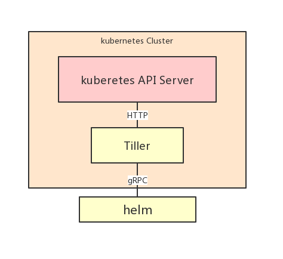
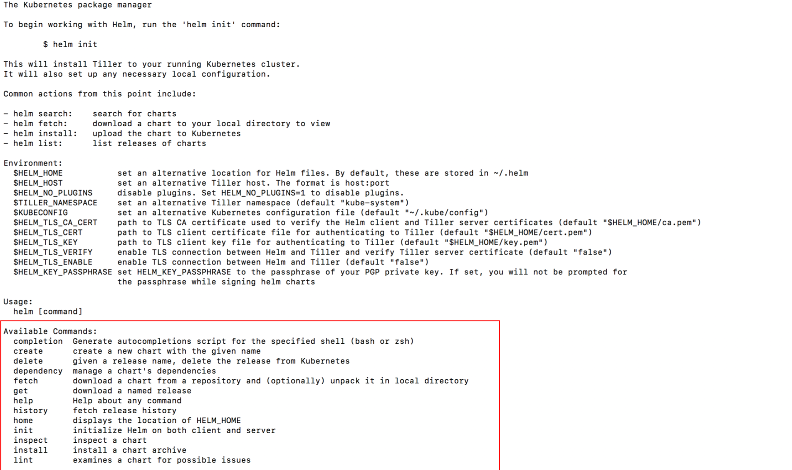

在Kubernetes集群中运行和管理应用程序的最简单方法是使用Helm。Helm允许使用安装，升级或删除等操作来管理应用程序。
参考
Kuberentes Helm 介紹 https://k2r2bai.com/2017/03/25/kubernetes/helm-quickstart/
Get Started With Kubernetes Using Minikube https://docs.bitnami.com/kubernetes/get-started-kubernetes/
Helm 是 Kubernetes Chart 的管理工具，Kubernetes Chart 是一套预先组织好的 Kubernetes 资源套件。使用 Helm 有以下几个好处：
- 查询与使用热门的 Kubernetes Chart 软件。
- 可以通过Kuberntes Chart来分享自己的软件
- 可基于现有 Chart 开发自己的Chart。
- 智能地管理 Kubernetes manifest 文件。
- 管理最新发布的 Helm 版本
概念
Helm 有三个重要的概念需要了解，分別为 Chart、Release 和 Repository，细节如下：
- Chart：主要定义要被执行的应用程式中，所需要的工具、资源、服务等资料，有点类似 Homebrew 的 Formula 或是 APT 的 dpkg 安装包。
- Release：一个被执行于 Kubernetes 的 Chart 实例。Chart 能够在一个集群中拥有多个 Release，例如 MySQL Chart，可以在集群中建立基于该 Chart 的两个资料库实例，其中每个 Release 都会有独立的名称。
- Repository：主要用来存放 Chart 的仓库，如 KubeApps。
可以理解 Helm 主要目标就是从 Chart Repository 中，查找需要的应用程式 Chart，然后以 Release 形式来部署到 Kubernetes 中进行管理。
Helm由两部分组成：Helm（客户端）和Tiller（服务器）。
下面是Helm的架构图：

安装
按照以下步骤完成Helm和Tiller安装并创建必要的Kubernetes对象，以使Helm与基于角色的访问控制（RBAC）一起工作：
$ curl https://raw.githubusercontent.com/kubernetes/helm/master/scripts/get > get_helm.sh
$ chmod 700 get_helm.sh
$ ./get_helm.sh
如果操作系统为OSX，请使用Homebrew安装helm.
$ brew install helm
使用以下内容创建ClusterRole配置文件。在此示例中，它名为clusterrole.yaml。
apiVersion: rbac.authorization.k8s.io/v1
kind: ClusterRole
metadata:
annotations:
rbac.authorization.kubernetes.io/autoupdate: "true"
labels:
kubernetes.io/bootstrapping: rbac-defaults
name: cluster-admin
rules:
- apiGroups:
- '*'
resources:
- '*'
verbs:
- '*'
- nonResourceURLs:
- '*'
verbs:
- '*'
要创建ClusterRole，请运行以下命令：
$ kubectl create -f clusterrole.yaml
创建ServiceAccount并将其与ClusterRole关联，请使用ClusterRoleBinding，如下所示：
$ kubectl create serviceaccount -n kube-system tiller
$ kubectl create clusterrolebinding tiller-cluster-rule --clusterrole=cluster-admin --serviceaccount=kube-system:tiller
初始化Helm，如下所示：
$ helm init --service-account tiller
如果你之前已经初始化过helm，直接使用下面的指令升级helm。
$ helm init --upgrade --service-account tiller
使用 kubectl get pods 检查当前的Tiller是否正确安装。如下面所示：
$ kubectl --namespace kube-system get pods | grep tiller
tiller-deploy-dbb85cb99-p5cqt 0/1 ContainerCreating 0 46s
或者直接使用 helm version，检查是否安装正确。如下所示。
$ helm version
Client: &version.Version{SemVer:"v2.12.3", GitCommit:"eecf22f77df5f65c823aacd2dbd30ae6c65f186e", GitTreeState:"clean"}
Server: &version.Version{SemVer:"v2.12.3", GitCommit:"eecf22f77df5f65c823aacd2dbd30ae6c65f186e", GitTreeState:"clean"}
一旦完成安装，就可以使用下面的命令执行相关的操作。

例子
通过执行helm install命令，应用程序将部署在Kubernetes集群上。您可以跨集群安装多个图表。
Important：如果没有使用
—name选项指定版本名称，系统则会自动分配一个名称。
你可以使用下面的Helm Chart 找到Redis的安装示例：
$ helm install stable/redis
也可以声明一个版本名称或者其他的选项。比如下面声明了一个版本名称为my-redis,并且指定该部署将使用持久化存储，大小为15G：
$ helm install --name my-redis \
--set persistence.enabled=true,persistence.size=15Gi stable/redis
安装图表后，“注释”部分将显示在安装信息的底部。它包含有关如何获取应用程序的IP地址或凭证的说明.
NAME: my-influx
LAST DEPLOYED: Thu Mar 14 12:36:50 2019
NAMESPACE: default
STATUS: DEPLOYED
RESOURCES:
==> v1beta1/Deployment
NAME DESIRED CURRENT UP-TO-DATE AVAILABLE AGE
my-influx-redis-slave 1 1 1 0 0s
==> v1beta2/StatefulSet
NAME DESIRED CURRENT AGE
my-influx-redis-master 1 0 0s
==> v1/Pod(related)
NAME READY STATUS RESTARTS AGE
my-influx-redis-slave-556f9894b7-wd5cf 0/1 ContainerCreating 0 0s
my-influx-redis-master-0 0/1 Pending 0 0s
==> v1/Secret
NAME TYPE DATA AGE
my-influx-redis Opaque 1 0s
==> v1/ConfigMap
NAME DATA AGE
my-influx-redis 3 0s
my-influx-redis-health 3 0s
==> v1/Service
NAME TYPE CLUSTER-IP EXTERNAL-IP PORT(S) AGE
my-influx-redis-master ClusterIP 10.107.184.240 <none> 6379/TCP 0s
my-influx-redis-slave ClusterIP 10.97.224.81 <none> 6379/TCP 0s
NOTES:
** Please be patient while the chart is being deployed **
Redis can be accessed via port 6379 on the following DNS names from within your cluster:
my-influx-redis-master.default.svc.cluster.local for read/write operations
my-influx-redis-slave.default.svc.cluster.local for read-only operations
To get your password run:
export REDIS_PASSWORD=$(kubectl get secret --namespace default my-influx-redis -o jsonpath="{.data.redis-password}" | base64 --decode)
To connect to your Redis server:
1. Run a Redis pod that you can use as a client:
kubectl run --namespace default my-influx-redis-client --rm --tty -i --restart='Never' \
--env REDIS_PASSWORD=$REDIS_PASSWORD \
--image docker.io/bitnami/redis:4.0.13 -- bash
2. Connect using the Redis CLI:
redis-cli -h my-influx-redis-master -a $REDIS_PASSWORD
redis-cli -h my-influx-redis-slave -a $REDIS_PASSWORD
To connect to your database from outside the cluster execute the following commands:
kubectl port-forward --namespace default svc/my-influx-redis 6379:6379 &
redis-cli -h 127.0.0.1 -p 6379 -a $REDIS_PASSWORD
刪除 Release
Helm 除了基本的建立功能外，还包含了整個 Release 的生命周期管理功能，如我们不需要该 Release 时，就可以通过以下方式刪除：
$ helm ls
NAME REVISION UPDATED STATUS CHART APP VERSION NAMESPACE
my-influx 1 Tue May 30 21:18:43 2017 DEPLOYED redis-6.3.0 4.0.13 default
$ helm del my-influx
release "my-influx" deleted
此时并未完全删除，我们可以通过 helm ls 查看被刪除的 Release：
$ helm ls --all
NAME REVISION UPDATED STATUS CHART NAMESPACE
my-influx 2 Tue May 30 21:18:43 2017 DELETED redis-6.3.0 default
当执行
helm ls指令为加入--all选项时，表示只列出DEPLOYED状态的 Release。
$ helm rollback my-influx 1
Rollback was a success! Happy Helming!
$ helm del my-influx --purge
release "my-influx" deleted
# 执行以下指令就不会看到已刪除的 Release.
$ helm ls --all
建立简单的 Chart 结构
Helm 提供了 create 指令建立一个 Chart 基本结构：
$ helm create example
$ tree example/
example/
├── charts
├── Chart.yaml
├── templates
│ ├── deployment.yaml
│ ├── _helpers.tpl
│ ├── ingress.yaml
│ ├── NOTES.txt
│ └── service.yaml
└── values.yaml
当我们设置完 Chart 后，就可以通过 helm 指令打包：
$ helm package example/
example-0.1.0.tgz
最后通过helm安装
$ helm install ./example-0.1.0.tgz
自己建立 Repository
Helm 指令除了可以建立 Chart 基本结构外，也提供了建立 Helm Repository 的功能，建立方式如下：
$ helm serve --repo-path example-0.1.0.tgz
$ helm repo add example http://repo-url